转动有多大
四年级上册 · 第二单元《角的度量》
今天：认识角 → 统一单位 → 开始量角
后续：画角 → 拼角与转向应用
准备：两条纸条、量角器、三角尺、直尺、铅笔和手写单。
10道主线＋6道接续练习。C2、C3直接在纸上做，已经计入16题。
先学一段，休息后再接下一段；不用一次做完。可以用指图、操作或短句表达。
进度只保存在当前设备；作答记录由你导出，不会自动上传。
数学地图
四年级上册 · 整册地图
实践活动：1亿有多大 · 寻找宝藏
第二单元 · 学习路线
- 认识角共同端点、两条射线；转动与角的分类本张 M0、A1—A3
- 比较与度量相同单位、1°、量角器、量角本张 B1—B3、C1—C3；含M1、M2教学
- 画角按指定度数画角后续学习
- 角的关系与应用拼角、求角、数角；转向指令本张 D1尝试钟面辨角，其余后续学习
- 整理与复习联系分类与度量，综合运用后续学习
本张先学到量角入门，不代表第二单元已经学完。地图表示学习安排；点过题目或标记完成，不代表已经掌握。
第一单元 · 接续练习
- R1—R2：盒、箱等分组层级，把中间结果接到所求。
- R3：接好数量关系，再把千克换成吨。
- R4—R5：大数推算与质量单位；R4含“吨→万吨”，R5只练到吨。
- R6：算出整月用量，统一单位后比较。
已会的部分保留，只补未稳的连接；具体知识验证达到要求后，结束该处集中修复。
本张任务 · 点击进入
认识角
从比较到量角
自己用一用
第一单元接续练习
先看一看：角是怎样转出来的
把两条纸条的一端叠在同一点，或用下面的活动图。蓝边留在起点，橙边绕着同一点转动。纸条表示角的两条边，数学中的射线还能继续延伸。
转不到四分之一周，是锐角；转四分之一周，是直角；超过四分之一周、不到半周，是钝角。半周是平角，一周是周角。
一周转完，两条边重合了，但确实转过了一整周。图中的圆圈保留了这个过程。
端点和射线还不清楚时
从一个固定的点向一个方向无限延伸，表示一条射线。两条射线从同一个端点出发，就形成角。手电筒发出的光可以帮助想象一个方向；图上有限的线只是表示。
换一个方向，再看直角
保持纸条开口不变，把整个图转个方向，再用三角尺上的直角比一比。直角不会因为斜着放就改变。判断角看开口或转动多少，不看边朝哪个方向，也不看纸条画得多长。
教学依据：现行教材第28页；参考李老头S3第7讲的活动角与换方向辨角讲解。图为教学模型。
把“转了多少”说准确
先用一个固定的小角作单位：把顶点叠在一起，第一份从起始边出发，后面每一份接着前一份，不留空隙，也不重叠。数有几份，就能描述转了多少。
上图的小角只是演示单位计数，每一份不是1°。大家随便选的小角不一样，报出的份数就不能直接比较。
人们约定：把一周平均分成360份，每份对应的角是1度，写作1°。这个约定直接学习，不需要自己猜出来或亲手分360格。
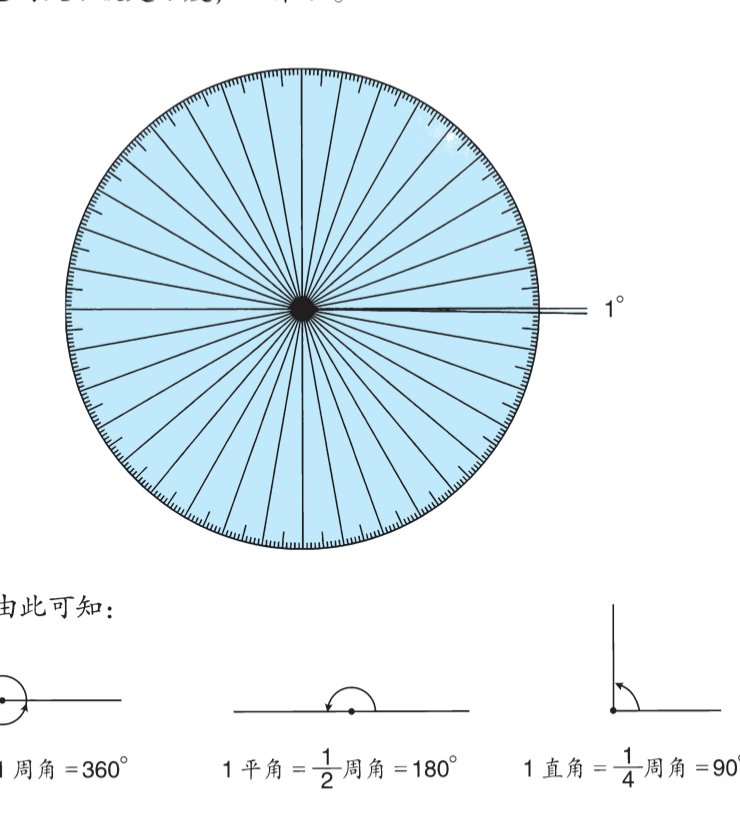
1周角＝360°；半周是180°；四分之一周是90°。量角器把半圆分成180等份，帮我们数角里有多少个1°。
沿着图指一指：哪里是一个小单位，哪里是半周？可以用动作说明，不必背整段话。
教学依据：现行教材第29—30页；蓝色三份图为单位计数教学示意。
量角：先对齐，再读数
拿出量角器。先看下面的示范，再在下一题操作。
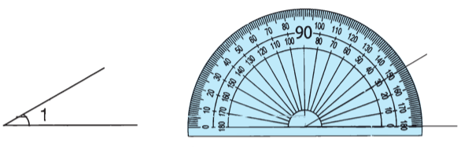
若边画得短，可以用直尺沿原方向延长，不能改变开口。
教学依据：现行教材第31页例2。示范不计作独立练习。
按原题要求作答；可以口述、指图或用草稿。
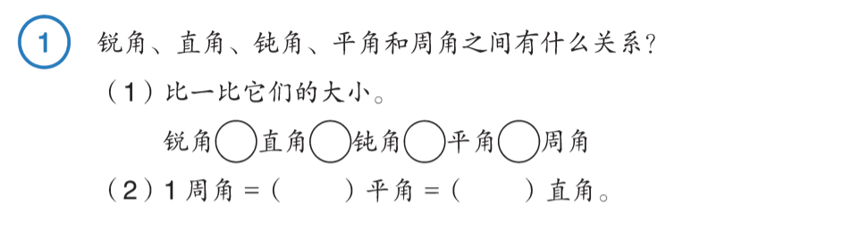
需要帮助
先用一个直角作参照；再看有没有转到半周或一周。指着顶点和两条边比较，方向不决定大小。
做过之后核对
锐角＜直角＜钝角＜平角＜周角；1周角＝2平角＝4直角。可以用转动、拼摆说明。
帮助后仍不明白，就保留这一题的位置。已经会的部分不用重做。
题源：人教版数学四年级上册（现行教材）｜第29页 例1
按原题要求作答；可以口述、指图或用草稿。
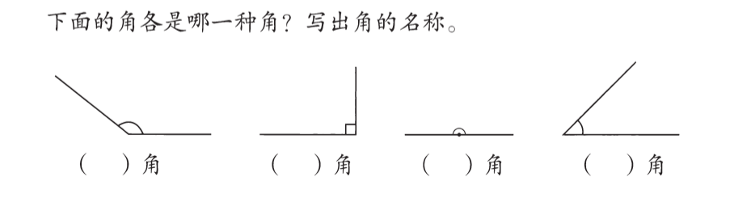
需要帮助
先用一个直角作参照；再看有没有转到半周或一周。指着顶点和两条边比较，方向不决定大小。
做过之后核对
从左往右：钝角、直角、平角、锐角。
帮助后仍不明白，就保留这一题的位置。已经会的部分不用重做。
题源：人教版数学四年级上册（现行教材）｜第29页 做一做
按原题要求作答；可以口述、指图或用草稿。
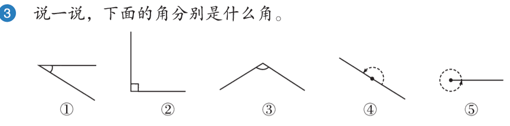
需要帮助
先用一个直角作参照；再看有没有转到半周或一周。指着顶点和两条边比较，方向不决定大小。
做过之后核对
①锐角，②直角，③钝角，④平角，⑤周角。看转动标记；周角转了一整周，不能只看末边重合。
帮助后仍不明白，就保留这一题的位置。已经会的部分不用重做。
题源：人教版数学四年级上册（现行教材）｜第33页 练习五第3题
这一段到这里。可以休息，回来接着未完成的题。
先比一比，不必猜精确度数。下一步会学怎样准确量。
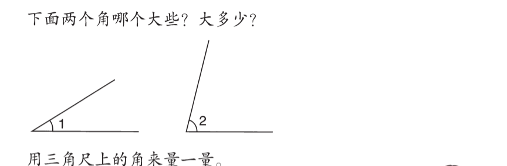
做过之后核对
∠2较大。三角尺可以帮助比较；还不能直接准确知道大多少。接着学习统一的度量单位，再量它们。这里不要求猜一个精确数。
帮助后仍不明白，就保留这一题的位置。已经会的部分不用重做。
题源：人教版数学四年级上册（现行教材）｜第29页 角的度量引入
按原题要求作答；可以口述、指图或用草稿。
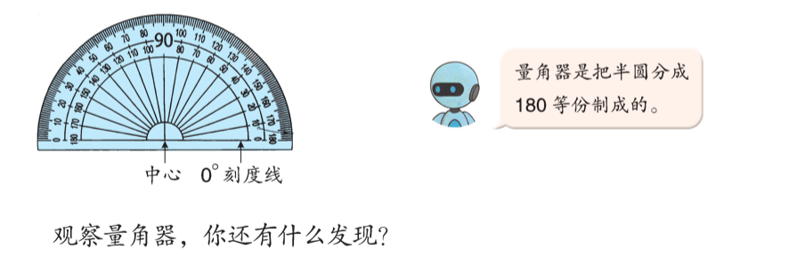
做过之后核对
例如：量角器有中心、0°刻度线；半圆有180个1°；两套刻度从不同方向的0开始。指出其中的发现即可，不必逐句背诵。
帮助后仍不明白，就保留这一题的位置。已经会的部分不用重做。
题源：人教版数学四年级上册（现行教材）｜第30页 页末观察量角器
上方原教材包含示范步骤。先看∠1示范，再自己量∠2；这一题是学习练习。
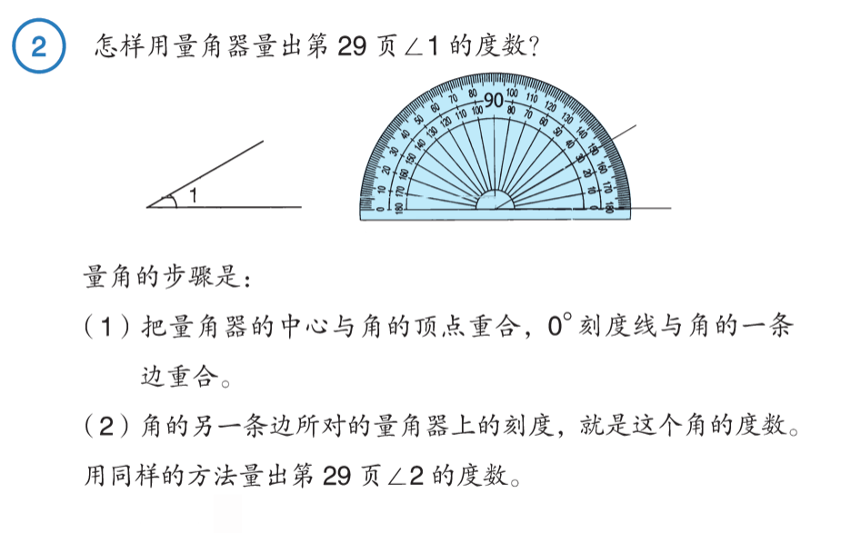
第29页要量的两个角：

做过之后核对
量角器中心对顶点，一条边对0°刻度线；从这一边的0读起。教材图量∠1约30°、∠2约75°，差约45°。以原图实际测量为准，不凭目测小偏差判关系错误。
帮助后仍不明白，就保留这一题的位置。已经会的部分不用重做。
题源：人教版数学四年级上册（现行教材）｜第31页 例2完整任务
这一段到这里。可以休息，回来接着未完成的题。
还不会对齐量角器时，先回示范做一次；仍不明白就停在这里，保留问题。不要靠猜完成后面的量角题。
按原题要求作答；可以口述、指图或用草稿。
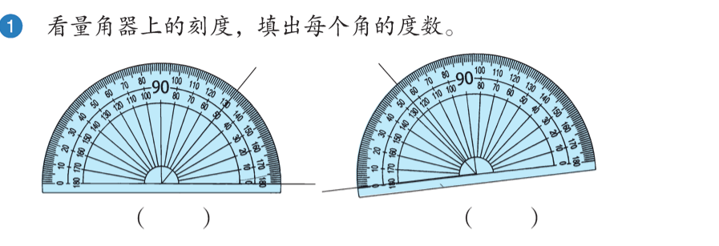
需要帮助
先找顶点，再让一条边对准量角器的0°刻度线。从这个0开始，沿同一套刻度找到另一条边。先估计是锐角、直角还是钝角，再检查读数。
做过之后核对
左图50°，右图60°。右图量角器斜放，从与角边重合的左侧0°读起；不能固定只读某一圈。
帮助后仍不明白，就保留这一题的位置。已经会的部分不用重做。
题源：人教版数学四年级上册（现行教材）｜第31页 做一做第1题
在手写单上直接完成，不先口述同一道题。
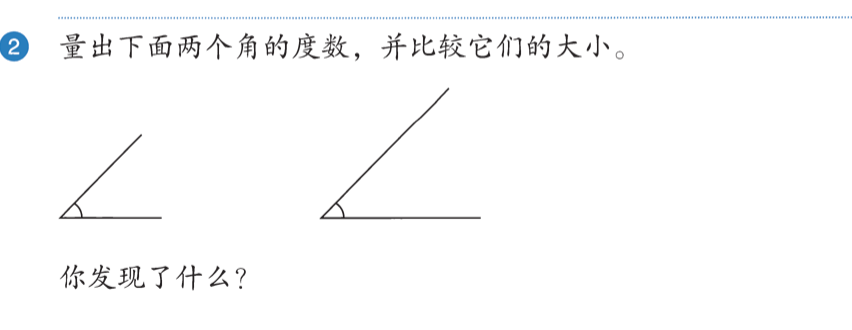
需要帮助
先找顶点，再让一条边对准量角器的0°刻度线。从这个0开始，沿同一套刻度找到另一条边。先估计是锐角、直角还是钝角，再检查读数。
做过之后核对
两个角都约45°，大小相等。画出来的边长不同，不改变角的大小；以实际摆放与测量过程核验。
帮助后仍不明白，就保留这一题的位置。已经会的部分不用重做。
题源：人教版数学四年级上册（现行教材）｜第31页 做一做第2题
在手写单上直接完成，不先口述同一道题。
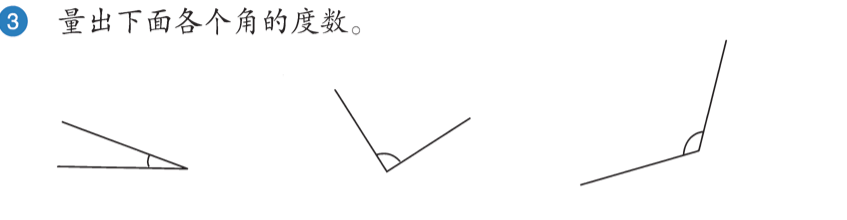
需要帮助
先找顶点，再让一条边对准量角器的0°刻度线。从这个0开始，沿同一套刻度找到另一条边。先估计是锐角、直角还是钝角，再检查读数。
做过之后核对
三个角约为20°、90°、120°。核对顶点、起始边和所读刻度；扫描和手部操作造成小偏差时回看过程。
帮助后仍不明白，就保留这一题的位置。已经会的部分不用重做。
题源：人教版数学四年级上册（现行教材）｜第32页 页首做一做第3题
按原题要求作答；可以口述、指图或用草稿。
A. 12时15分 B. 3时 C. 6时
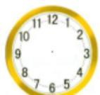
需要帮助
先想整点时分针在哪里，再看时针。若不熟悉钟表怎样走，记下这一点，先保留题位。
做过之后核对
B，3时。6时是平角；12时15分的时针已经走过12，不是正好直角。
帮助后仍不明白，就保留这一题的位置。已经会的部分不用重做。
题源：四上数学同步练习·分层训练3.3角的分类｜第1题（原电子文第11—15行）
这一段到这里。可以休息，回来接着未完成的题。
先看本题教学，再接着做。
需要帮助1
找箱数，就是数480盒里有多少组4盒。可以用480÷4。若除法卡住，把480盒看成400盒和80盒，分别合箱后再合起来。
需要帮助2
如果分组关系明白，只是算错，就核对除法；如果还不明白为什么除以4，指着上面的4个盒子说一箱在哪里，再回到480盒。
做过之后核对
12000÷25＝480盒；480÷4＝120箱。反查120×4×25＝12000节。
帮助后仍不明白，就保留这一题的位置。已经会的部分不用重做。
题源：【期末题型专项】八大单元解答题50题 人教版（含答案）｜电子原文第51—51行；答案第366—372行（纸本页码未核）
按原题要求作答；可以口述、指图或用草稿。
需要帮助
可以先把每栋的3个单元合起来，求一栋有多少套；也可以逐级分。每步带上套、单元或栋。
做过之后核对
3×12＝36套/幢；936÷36＝26幢。也可936÷12÷3。
帮助后仍不明白，就保留这一题的位置。已经会的部分不用重做。
题源：【期末题型专项】八大单元解答题50题 人教版（含答案）｜电子原文第33—33行；答案第314—320行（纸本页码未核）
按原题要求作答；可以口述、指图或用草稿。
需要帮助
55千克是去年每棵，25千克是每棵多收的。先说今年一棵共收多少，再扩到125棵。1吨＝1000千克。
做过之后核对
（55＋25）×125＝10000千克＝10吨。
帮助后仍不明白，就保留这一题的位置。已经会的部分不用重做。
题源：【期末题型专项】八大单元解答题50题 人教版（含答案）｜电子原文第21—23行；答案第282—290行（纸本页码未核）
这一段到这里。可以休息，回来接着未完成的题。
先看本题教学，再接着做。
（1）一杯水重（ ）克。
（2）如果14亿人每人每天节约1杯水，那么每天一共能节约多少万吨水？
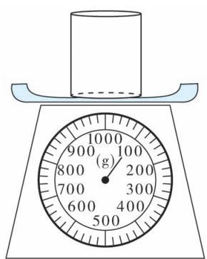
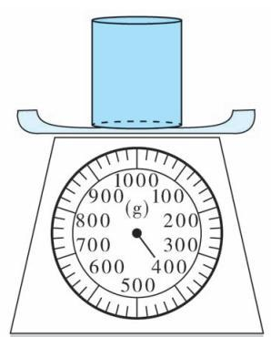
需要帮助1
先把克换成吨。1吨是1000000克的一大份。比如2000000克有2个1000000克，所以是2吨。现在数420000000000克里有多少个1000000克。
需要帮助2
再把吨换成万吨。“万吨”一份是10000吨，比如30000吨是3万吨。用你刚求出的吨数，数出有多少份10000吨。
需要帮助3
算大数卡住时：1亿克＝100吨，所以4200亿克＝4200×100吨。换成万吨后，可乘10000回到吨，检查是不是同一批水。
做过之后核对
400－100＝300克；300×1400000000＝420000000000克＝420000吨＝42万吨。
帮助后仍不明白，就保留这一题的位置。已经会的部分不用重做。
题源：25秋53天天练四上北京数学｜电子原文第668—676行；答案第1698—1701行（纸本页码未核）
按原题要求作答；可以口述、指图或用草稿。
A. 640 B. 6400 C. 64000 D. 640000
需要帮助1
100滴合成一组，每组8克。先把80亿滴按每100滴分组，再求所有组的克数；最后把克换成吨。
需要帮助2
如果只是80亿÷100卡住：80亿＝800000万，除以100后是8000万组。每组8克，请接着求总克数。这一步已经得到帮助，后面的表现另记。
需要帮助3
如果克换吨卡住，回想1吨＝1000000克。数总克数里有多少个1000000克。可以乘回去检查；不需要换成万吨。
做过之后核对
A。80亿÷100＝8000万组；8000万×8＝64000万克＝640000000克＝640吨。
帮助后仍不明白，就保留这一题的位置。已经会的部分不用重做。
题源：25秋53天天练四上人教数学福建专版｜电子原文第1119—1120行；答案第2284—2284行（纸本页码未核）
按原题要求作答；可以口述、指图或用草稿。
需要帮助
8月有31天。可以把食物总量都写成千克再比较，不拿5和5115直接比。
做过之后核对
8月31天；165×31＝5115千克，5吨＝5000千克，不够。
帮助后仍不明白，就保留这一题的位置。已经会的部分不用重做。
题源：【期末题型专项】八大单元解答题50题 人教版（含答案）｜电子原文第121—121行；答案第522—530行（纸本页码未核）
这一轮到这里
保留手写首稿和修改痕迹、外部录音。导出文件保存作答笔记和帮助记录。
返回地图